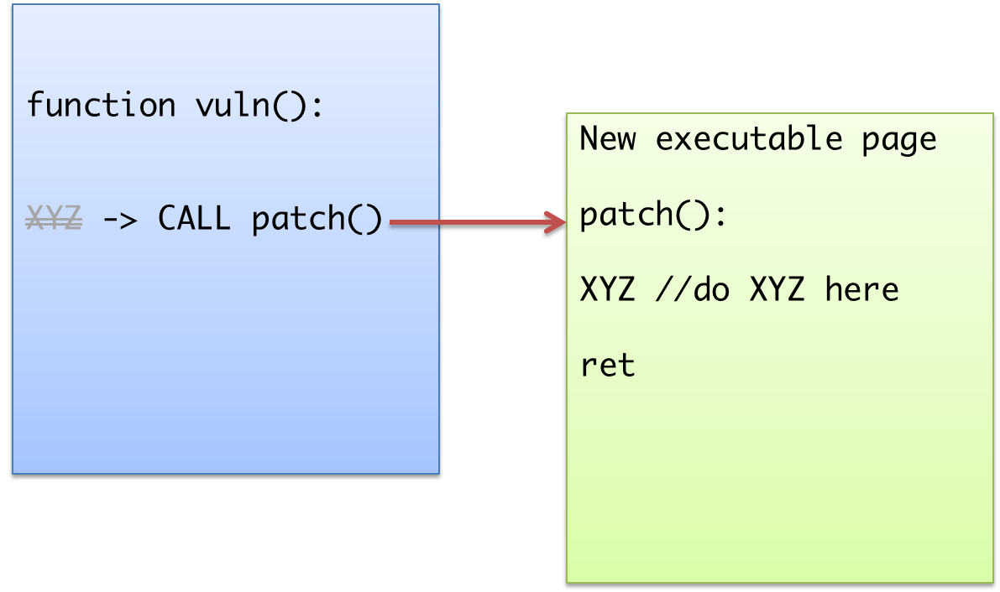

Defense in CTF
Defense
Defense
- 阻截攻擊不論在實務上或在 CTF 裡都是重要的工作
- 為了比賽的遊戲性及可看性，防禦的難度會比正常情況高
Attack & Defense 規則
- 每支隊伍負責管裡一模一樣的 server & services
- Services 以特定的 port 對所有隊伍開放
- 透過攻擊其它隊伍的服務，入侵對方主機
- Judge 以是否能得到對方主機上的 flag 來判定是否入侵成功

Defcon Attack & Defense Rules
- 共 20 隊，每隊擁有相同的 ARM gamebox
- 每個 service 以獨立的 user 運作，另外有一個 team user 可以任意 su 成 service user
- 每個 flag 只有對應的 service user 有讀取權限
- Service 故障跟 flag 被偷的失分相同，皆為 19 分
- 每個 round 五分鐘，flag 會更新且取得的 flag 必須在該 round submit 才有效
防禦的困難點
- 沒有 root，有不少工作沒辦法做
- iptables
- log / tcpdump
- 權限的控管
- 沒有 ptrace、seccomp 等制作 sandbox 用的 library
- 沒有即時的流量監控
防禦工作及方式
- 修補漏洞
- Patch
- Hook
- 妨礙漏洞利用
- Wrapper / filter
- Misc.
- 封包分析
- 尋找攻擊封包
Binary Patching
Binary Patching
- 在沒有 source 的情況下，直接修改 binary 修補漏洞
- 平常可以應用在軟體的破解、修改上
- 在逆向時也常常會需要 patching
- 移除一些 anti-debuging 或修正 disassemble 的片段
- 加入 tracing 或 logging function
Static & Dynamic
- 依照修改 binary 檔的時間，可以分為 static 和 dynamic
- Static 直接修改原 binary，取代原本的指令
- Dynamic 在程式啟動後先載入一段 code 去修改 binary 中的指令
Example
sprintf()buffer overflow in pepper (ISG 2014)- Extend stack frame size
- Reallocate buffer
Example
- Reverse bin100 (ebCTF 2013)
- My first CTF task
- Replace
==to!=
Limitations
- Static patching 受到 bytecode 長度的限制，沒有辦法加入比原本長的指令
- 假如要插入的內容在 runtime 時才能確定則沒辦法 patch
Dynamic Patching
- src
- 在 runtime 時動態加入或修改指令
mprotect()解除記憶體寫入保謢- 插入或修改 binary code
- 如果有必要，可以加掛新的 page 用來放更長的 code
mprotect()打開寫入保謢
- 只要修改 patcher 就可以加上新的 patch
Dynamic Patching
- 基本上可以加入任意大小的 patch 
Dynamic Patching
- 載入 patch 可以利用
LD_PRELOAD __attribute__ ((constructor)) void init(void)- 會在所有 segment 載入後才執行，但在 main 之前
- 可以 allocate 需要額外的 function
Example
- Input out of range in pepper (ISG 2014)
- 存在一個 information leaking 漏洞
- 加入對輸入範圍的檢查
Dynamic Patching
- 沒有 binary code 長度限制的問題
- 適合要加入某些新的功能時
- 甚至可以輕易換掉整個 function
- 只要在 function entry 插入
jmp指令
- 只要在 function entry 插入
- 版本控制容易
Limitations
- 寫壞時 debug 比較困難
- 比賽進行中更難
- 可能不需要寫 assembly code，但要注意 gcc 編譯出來的 function 不會改到重要的 register
- 可以內嵌 assembly 備份全部 register
- 如果功能較簡單不如直接寫 assembly
- 有 ASLR 時要注意改寫的 address
Tricks
- Hijack with trap
- Without
LD_PRELOAD(e.g. with-static)
Hijack with trap
- 空間太小連一個 function 都放不下，或不好處理
- 可以插入 debugging trap (0xCC)，只要一個 byte
- 註冊 signal handler on
SIGTRAP - signal handler 還可以保證不會影響 register 的內容
- 有多個 handler 時可以用
eip的值來判斷是從哪裡跳過來
Without LD_PRELOAD
LD_PRELOAD沒有辦法使用或沒有作用，例如 static ELF- 改寫
main()或_start，加入一段 loadermmap+jmp/call載入自己的 patcher- loader 載入完 patcher 後，可以還原 main() 原本的內容，最後再重新跳回 main()

Wrapper
Wrapper
- 實際上沒有修補好漏洞，但包上 wrapper 後將使得 exploit 變得困難或不可能
- 使用上較靈活，也不一定要修改到 binary 本身
- 發現漏洞後，可以加上針對這個漏洞的 wrapper
- 也有泛用型的 wrapper，針對常見的漏洞型態提供保護
- 類似於 application firewall
用途
- Input/output filter
- Library harden
- Sandbox
Input filter
- ASCII/number only
- Buffer overflow 要跳轉的 address 難以直接輸入
- Forbidden keywords
- e.g. 過濾 flag, cat, sh 等 keyword
- 過濾 format string
Output filter
- 過濾 flag 內容
- 過濾非 ASCII 字元
- 避免 information leaking
Filter 實作
- 由於沒有 tcpdump 拿不到即時的封包，需加在 binary 上
- Hook 掉 input / output function
- 在
read(),gets(),scanf()等 function 上過濾
- 在
- 轉接 file descriptor / socket
- 接走 remote 來的輸入，檢查後再送進 service
remote <-> I/O filter <-> local service
Filter
- 過濾字元是很有效的通用防禦，在沒有辦法輸入特定 address 的情況下要進行 control flow hijack 十分困難
- 因此 judge 方會通常針對這點進行檢查，這樣的 filter 很可能導致 service check fail
Library Harden
- 修改或換掉 library，使對方難以利用 ret2lib 進行攻擊
- 也可以加強 library 本身的安全特性
- 關閉 format string 的寫入
malloc()隨機化
Library Harden
- 換掉 library
- 使對方沒有辦法得到
system(),exec()的 address LD_LIBRARY_PATH,LD_PRELOAD
- 使對方沒有辦法得到
- patch 掉不需要的 function
- 將
system(),exec()等 function 破壞掉 - 還是有可能直接被 ROP 攻擊
- 將
Sandbox
- 使用
ptrace攔截不合法 system call - 使用
seccomp禁止不合法 system call - 有經驗的 attack & defense 比賽都會關閉這兩個功能
- 或巧妙的設計 service 使得這些 system call 會被使用，而無法完全禁止
Binary Harden
Binary Harden
- 加強 binary 本身，使漏洞難以利用，在還未找到漏洞時可以直接加上這類防禦
- 開啟 DEP
- GOT readonly
- Stackguard randomize
- Dynamic recompile
開啟 DEP 保謢
Usage: execstack [OPTION...]
execstack -- program to query or set executable stack flag
-c, --clear-execstack Clear executable stack flag bit
-q, --query Query executable stack flag bit
-s, --set-execstack Set executable stack flag bit
-?, --help Give this help list
--usage Give a short usage message
-V, --version Print program version
GOT 唯讀
- Global offset table 用來查詢外部 library 中函式的位址
- 因為是 load before call 所以是 table 可寫的，內容有可能被改寫導致 hijack
- 可以使用 binary patching，改掉
.plt上根據 GOT 內容jmp的寫法，直接寫死 function address
Stackguard Randomize
mov eax, large gs:14h取得的 canary 內容是固定的- 對 fork 式且沒有重新 exec 的 service 來說，可以被 stack reading 推出 canary
- 若存在 information leaking 漏洞，就可以繞過 stackguard 的保護
Stackguard Randomize
- 改成
call get_canary()這樣的型式，去拿新的隨機 canary - 檢查時的
xor eax, large gs:14h也要一起修改 - 這兩段 bytecode 是固定的很容易辨認，基本上做簡單的字串比對並取代不太會出問題，保險一點也可以再從 disassembler 檢查
Stackguard Randomize
- 多層 function call 時，要將上一層的 canary 存起來
- 取得 canary 時，push 進 stack 保存起來
- 檢查 canary 時，從 stack pop 出來檢查
Dynamic Recompile
- 利用類似 binary translation 的技術，以 basicblock 為單位重新建立 binary，並在這個過程中動態加強安全性
- Intel Pin - A Dynamic Binary Instrumentation Tool
- 也可以自己寫簡單的 translator
Dynamic Recompile
- 用途
- Whole binary ASLR
- Call/return sanity check
- 取代 ptrace/seccomp
Whole binary ASLR
- 一般來說 code 本身的 ASLR 功能是關閉的 (without
-pie -fPIC)，可以被 ROP 類的攻擊方法利用 - DBI 可以將真正執行的 code，以 basicblock chaining 的方式重新排列到新的位置去，造成 ret2text 類的攻擊幾乎不可能
Call/return sanity check
- Function call 發生時，對 return address 做額外的保護
- 備份到它處，避免 buffer overflow 時被改動
- xor 一個值 (類似 stackguard)，攻擊者進行 buffer overflow 時沒有辦法知道要覆蓋怎樣的內容
- Return 時進行檢查
取代 ptrace/seccomp
- 可以直接取代掉
int,syscall指令，對 syscall number 進行檢查 - 完全阻止開出 shell 的可能
Limitations
- 效能問題，以 Intel Pin 來說大約下降 30%~40%
- 防範 control flow hijack，但無法阻止邏輯上的漏洞或 information leaking
- 因為過度有效，以 CTF 來說有可能直接被比賽規則禁用
Misc
Logging by Wrapper
- 可以從直接從 wrapper 得到輸入輸出
- 提早得到攻擊封包
- Backtrace & function calls
- 檢查有沒有異常的 function call
- 利用 footprint 和 backtrace 的資訊，很容易追踨並找出漏洞
Drop connection
- 以 xinetd 建立的 service 來說，可以從
REMOTE_HOST這個環境變數得到對方的 IP - 如果 judge 的檢查機制不夠強，可以直接切掉強隊的連線
同步執行檢驗
- 以 wrapper 將 input 同時送到兩個 process 上執行
- Service 如果沒有隨機成份，理論上輸出要完全相同
- 除了跟 ASLR 有關的部份!
- 如果兩個 process 的 output 不匹配，很可能就是被攻擊了
反向 stack
- 發現有 buffer overflow 時，如果只是加大 stack frame 還是有可能被攻擊
- 反過來把 stack frame 開在 return address 之後
var1 return addr
buf1 --> ...
... var1
return addr buf1字串取代
- 想使用 wrapper 過濾 keyword (e.g. flag) 但因為 judge 的 check script 會包含該 keyword，不可以直接 reject
- 輸入時取代字串，輸出時再換回
flag -> f14g,f14g -> flag- 對方試圖讀取 flag 內容時會失敗，但 judge checking 又可以檢查到正確的輸出
流量重新導向
- 導向至其它 server
- 一般規定必需在本機上執行
- 所有 service 導向至同一個 user
Conclusions
- Defense 其實是很容易的
- 特別是在 CTF 中，時間有限而且還沒辦法得知對方做了哪些防護
- 也因此良好的 attack & defense 題目很難出
- 實務上 sandbox 和 DBI 一類的防護很有效
- 但沒有辦法避免 information leaking
- 多少會造成 performance 下降的問題